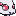

Followers are mini-version of every Tamas. Click on their image for download it. They can be placed on the Floaty Folder with Texture Replacement.
Otherwise, will be soon be on the Followers plugins for have three Tamas following you.
| Talfou (2) | |||
| Dropple (1) | Toxee (1) | Larvee (1) | Beebee (1) |
 |
 |  |
- (1) Made per Snrasha
- (2) Made per Mirasein